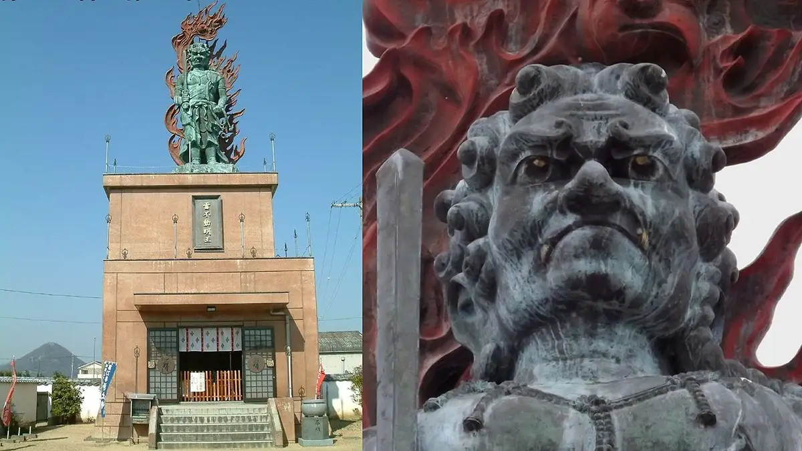
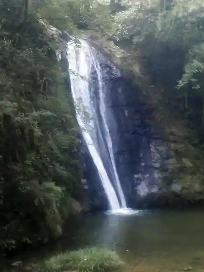
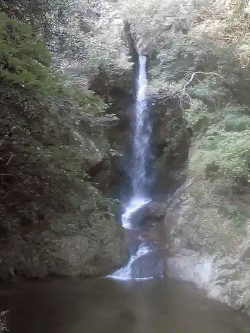
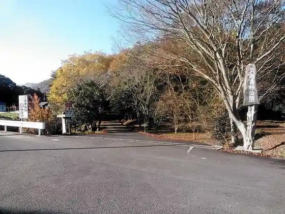
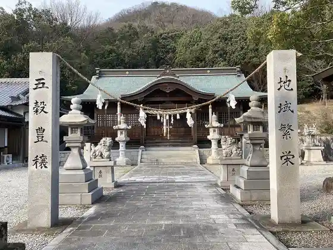

Miki
Miki · Kagawa
Miki
Highlighted on the Kagawa map.

Stay
Ya Shima Nada Onsen TRESTA Hakusan
HOTEL AZ Kagawa Miki Mise
Miki Satoyama Guranpingu
Dining
Miki Sakaba
Kizuna
Aji Izumi
Mishima Ya
Resutoran'oriibu
Sanuki Oyadori Chuka Soba Kashiwa no Ki
Sushi Tomi
Kaki Yaki Hakusan
Ramen Iori Fukuichi Honjin
Miki Marushie
R
Yakiniku Go En Miki Mise
Maru Sachi
Ran
Ganso Kassha Yaki Miki Mise
Miki
Onsen
Ya Shima Nada Onsen TRESTA Hakusan Rotemburo
Experience
Toresuta Hakusan Aisuariina
Sights
Jodo Tera
Niji Falls (Odaki)

Niji Falls (Medaki)

Ko Fuchi Forest Park

Hakusan Shrine

Otoko I Kan Ike
Ikedo Hachiman Shrine
Hakusan